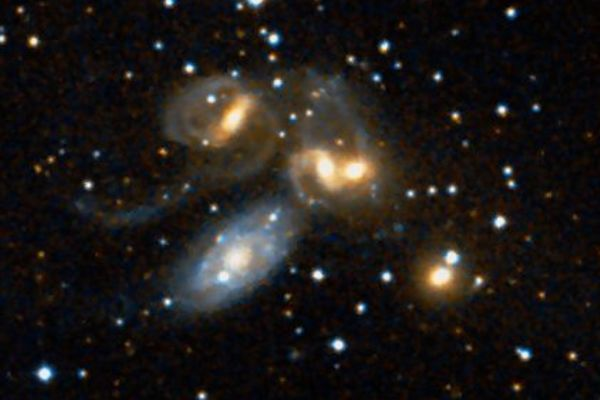

Латинское название: Pegasus
Крылатый конь, порождение Медузы Горгоны и Посейдона, появился на свет из Медузы, когда Персей отсек ее голову.
Эратосфен, впрочем, лишает созвездие Пегаса чести быть Пегасом, потому что, говорит он, Пегас крылат, а это созвездие (которое в то время вообще-то называли просто Конь) - бескрыло.
А вот это интересное образование: пять галактик в одной кучке! Фактически, одна из них находится ближе и просто проецируются на на остальную четверку. Но эти четыре находятся в состоянии сильного приливного взаимодействия, структуры их искажены, а в межгалактическом пространстве прокатываются ударные волны, порожденные движением галактик.
